Seattle Brewery Finder
Are you 21 or older?
Please select one of the options below.
 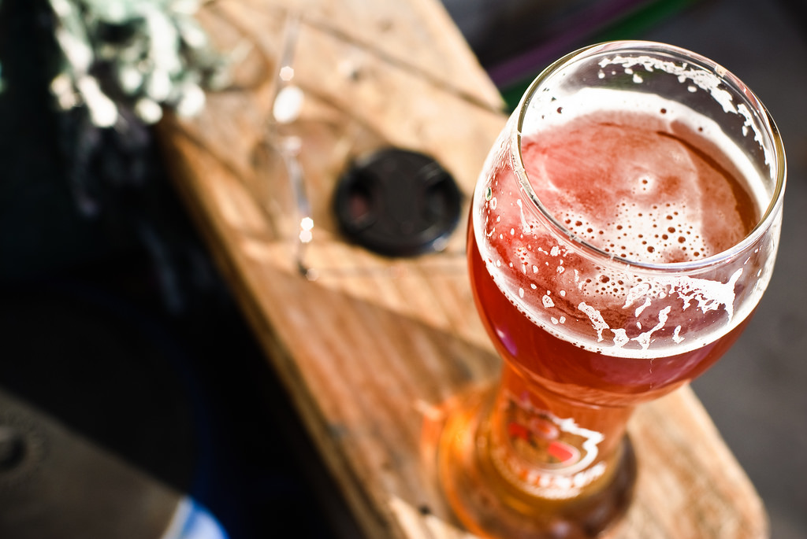
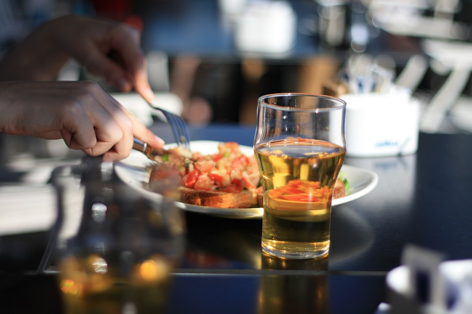
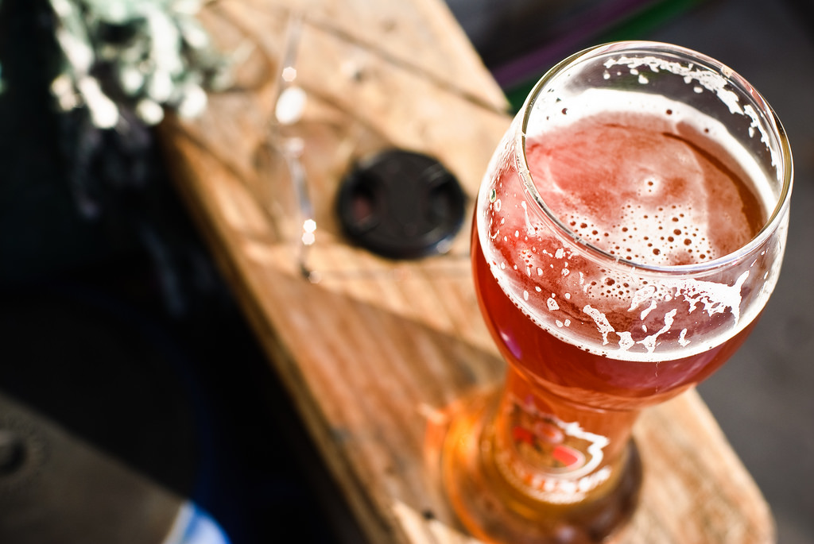
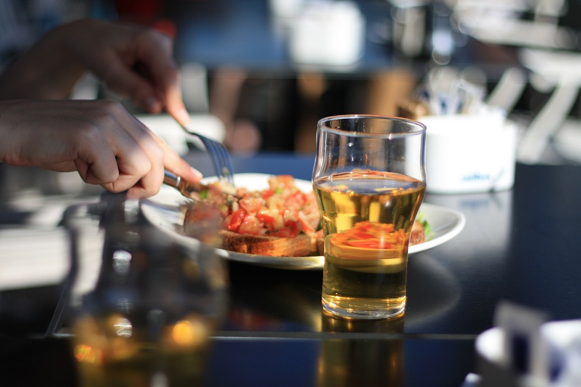

 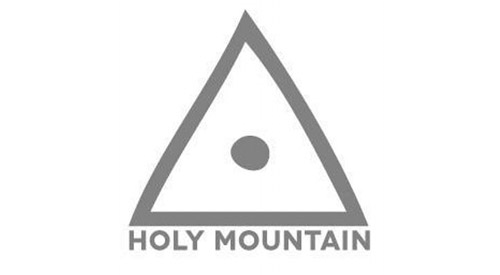
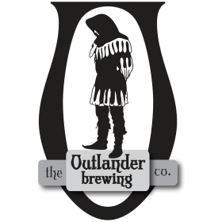
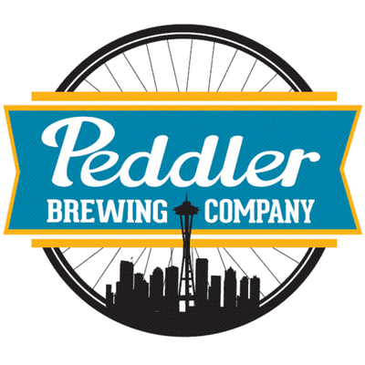
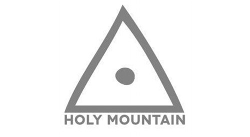
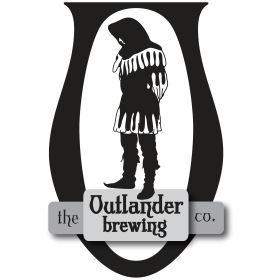
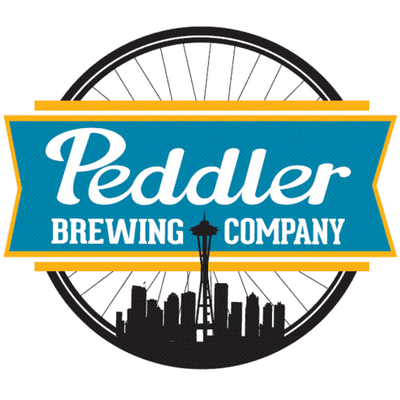

 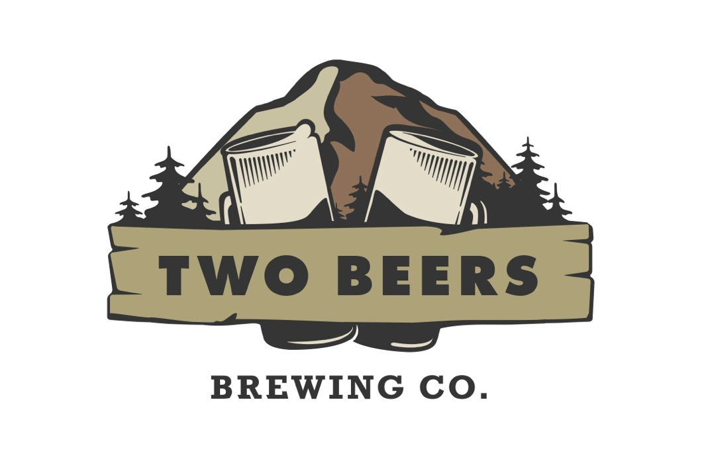
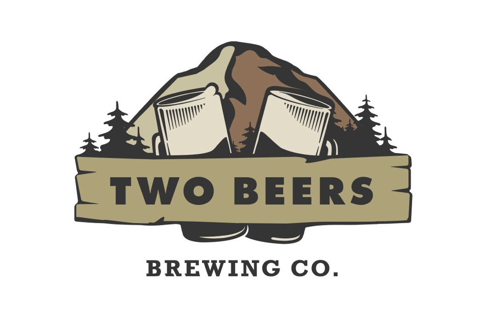
Seattle Brewery Finder was started in a Code Fellows 201 class. It was the final project idea of David Stoll. The goal of Seattle Brewery Finder is to allow a user to find a Brewery in Seattle that meets their needs. This site tells you if you can bring your dogs or children with you on your next outing.